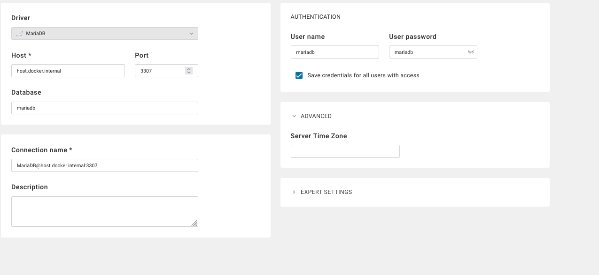
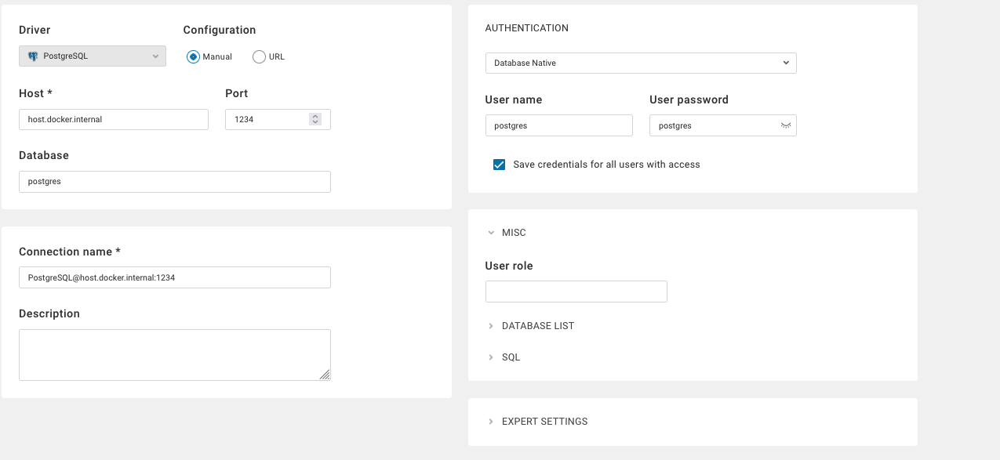
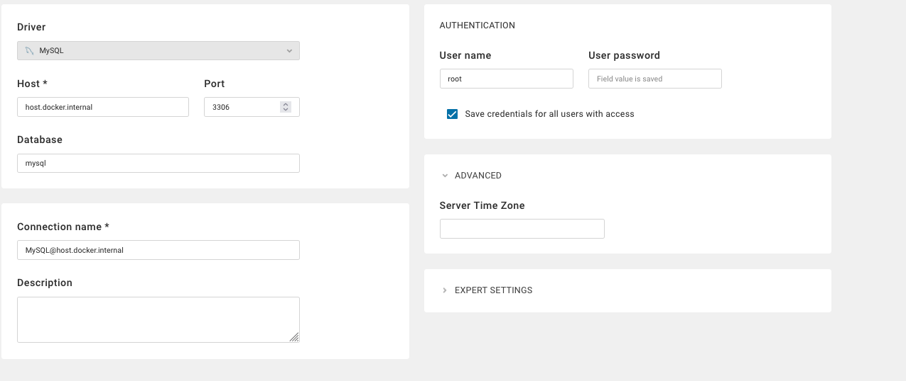

DBeaver
DBeaver est un client SQL universel et une interface d'administration de bases de données qui supporte plus de 80 systèmes de bases de données différents.
Lancement de DBeaver
Via le Makefile
make run-dbeaver
Accédez ensuite à l'interface web :
http://localhost:8080
Première configuration
- Créez un compte admin lors du premier accès
- Sélectionnez votre langue préférée
- Configurez vos connexions via le menu "Database"
Configuration des connexions
MariaDB

Type: MariaDB
Host: localhost
Port: 3307
Database: mariadb
User: mariadb
Password: mariadb
Paramètres avancés :
allowPublicKeyRetrieval=true
useSSL=false
PostgreSQL

Type: PostgreSQL
Host: localhost
Port: 1234
Database: postgres
User: postgres
Password: postgres
Paramètres SSL : Désactivé
MySQL

Type: MySQL
Host: localhost
Port: 3306
Database: mysql
User: root
Password: root
Paramètres critiques :
allowPublicKeyRetrieval=true ➔ Obligatoire
useSSL=false ➔ Recommandé
Fonctionnalités clés
- Éditeur SQL intelligent avec auto-complétion
- Visualisation des schémas de base de données
- Gestion des utilisateurs et permissions
- Import/Export de données en multiples formats
- Monitoring des performances en temps réel
Dépannage MySQL
Erreur "Public Key Retrieval" : 1. Dans l'onglet "Paramètres du pilote" :
allowPublicKeyRetrieval = true
useSSL = false
make clean-mysql && make run-mysql
Bonnes pratiques
- Utilisez des connexions séparées pour chaque environnement (dev/test/prod)
- Activez le chiffrement SSL pour les connexions externes
- Sauvegardez régulièrement vos configurations de connexion
- Utilisez les snippets SQL pour les requêtes récurrentes
Liens utiles
DBeaver simplifie la gestion multi-bases grâce à son interface unifiée. Son support étendu des drivers et ses fonctionnalités d'exploration de données en font un outil indispensable pour les développeurs et DBA.